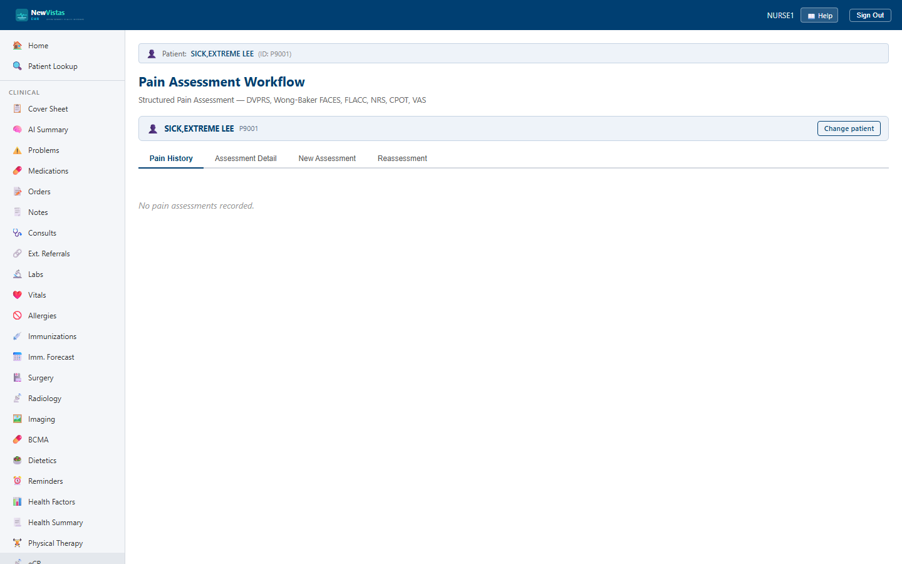

Pain Assessment
Document a structured pain assessment for a patient using any of six validated tools — NRS, DVPRS, Wong-Baker FACES, FLACC, CPOT, or VAS — review the pain history with severity-coded rows, and record a post-intervention reassessment to show whether treatment worked.
Open the Pain Assessment screen
- Go to
/pain-assessment(linked from the cover sheet whenever a recorded pain score is above 0). - In the Patient Bar at the top, enter the patient ID and click Load.
- The Pain History tab opens. If nothing is on file yet it reads "No pain assessments recorded."

What you see
The four tabs across the top are Pain History, Assessment Detail, New Assessment, and Reassessment.
Pain History tab
- One row per assessment, with columns for Date/Time, Nurse, Tool, Score, Location, Reassess?, and Post-Rx.
- The score shows as a colored badge (
n/10) — green at 0, blue for mild, amber for 4–6, red for 7 and above. - Rows are shaded by severity: amber for a score of 4–6, red for 7+, so the worst pain stands out at a glance.
- Click View on any row to open the full Assessment Detail.
New Assessment tab
- Tool — choose NRS (0–10), DVPRS, Wong-Baker FACES, FLACC, CPOT, or VAS.
- Pain Score (required, 0–10), Location, and Character (Sharp, Dull, Burning, Throbbing, Aching, Pressure, Stabbing).
- Nurse ID, Onset (Acute, Chronic, Intermittent), Intervention (e.g.
Morphine 4mg IV), Acceptable Level, and Notes. - Click Record Pain Assessment to save; a banner confirms the new assessment ID and the history reloads.
Reassessment closes the loop
On the Reassessment tab, enter the Initial
Assessment ID (copy it from the history or detail view), the
Post-Rx Score, the Minutes Since the
intervention, and the intervention given. This records whether the
treatment was effective and is required after any score that prompted an
intervention.
Pick the tool to match the patient
Use FLACC or CPOT for patients who can't self-report (infants, sedated, or
non-verbal), Wong-Baker FACES for children, and NRS or DVPRS for most
adults. The Assessment Detail view shows the extra DVPRS and FLACC
component breakdowns when those tools were used.